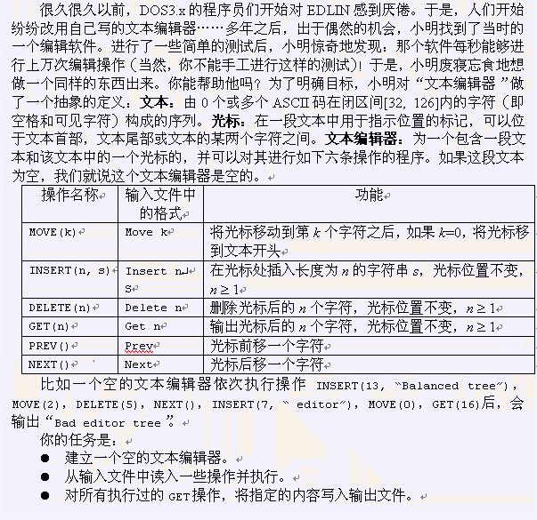

[NOI2003]Editor
时间限制：5s 空间限制：162MB
题目描述

输入格式
输入文件editor.in的第一行是指令条数t，以下是需要执行的t个操作。其中： 为了使输入文件便于阅读，Insert操作的字符串中可能会插入一些回车符，请忽略掉它们（如果难以理解这句话，可以参考样例）。 除了回车符之外，输入文件的所有字符的ASCII码都在闭区间[32, 126]内。且行尾没有空格。 这里我们有如下假定： MOVE操作不超过50000个，INSERT和DELETE操作的总个数不超过4000，PREV和NEXT操作的总个数不超过200000。 所有INSERT插入的字符数之和不超过2M（1M=1024*1024），正确的输出文件长度不超过3M字节。 DELETE操作和GET操作执行时光标后必然有足够的字符。MOVE、PREV、NEXT操作必然不会试图把光标移动到非法位置。 输入文件没有错误。 对C++选手的提示：经测试，最大的测试数据使用fstream进行输入有可能会比使用stdio慢约1秒。
输出格式
输出文件editor.out的每行依次对应输入文件中每条GET指令的输出。
样例输入
15 Insert 26 abcdefghijklmnop qrstuv wxy Move 15 Delete 11 Move 5 Insert 1 ^ Next Insert 1 _ Next Next Insert 4 .\/. Get 4 Prev Insert 1 ^ Move 0 Get 22
样例输出
.\/. abcde^_^f.\/.ghijklmno
提示
没有写明提示
题目来源
没有写明来源